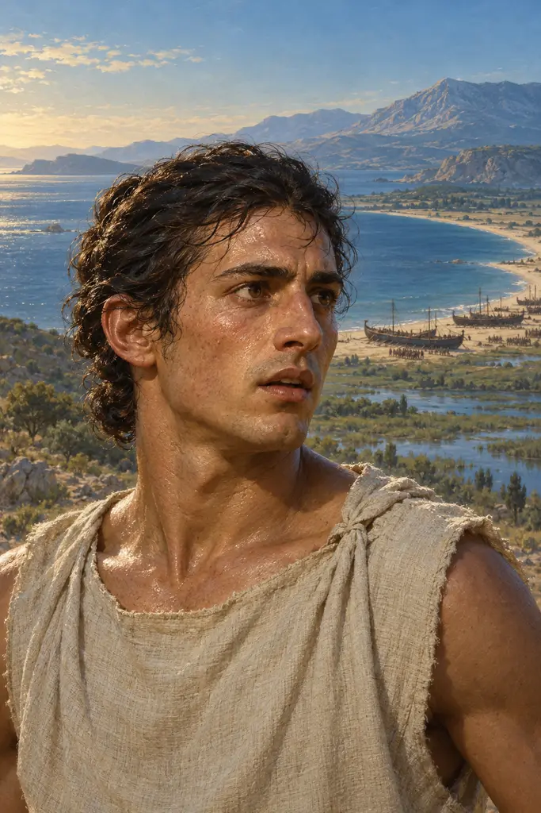
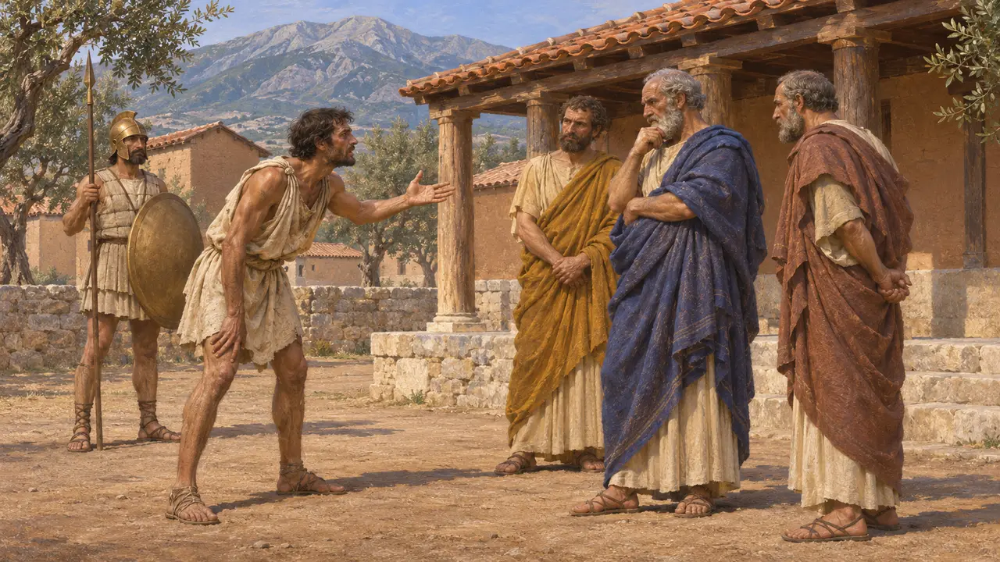
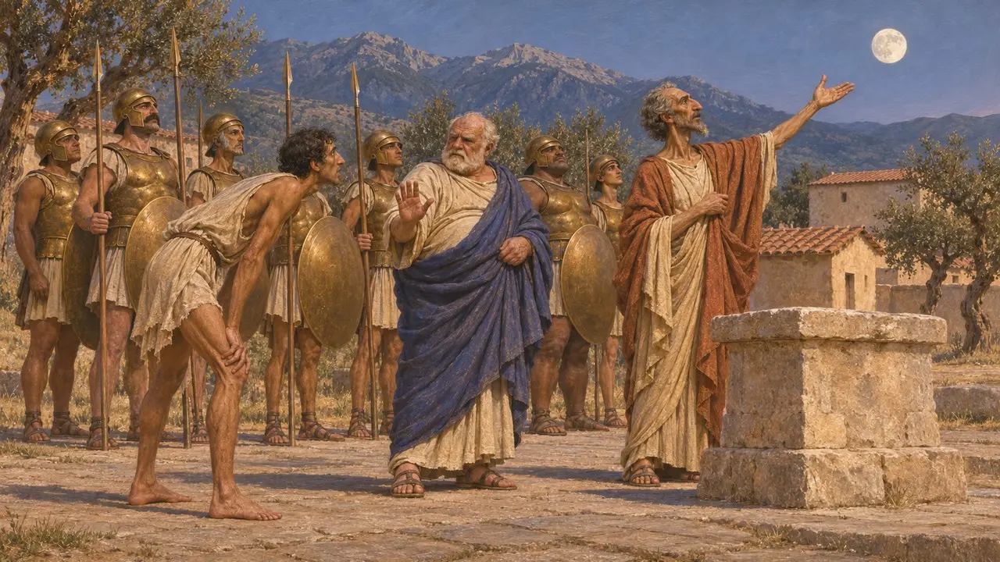
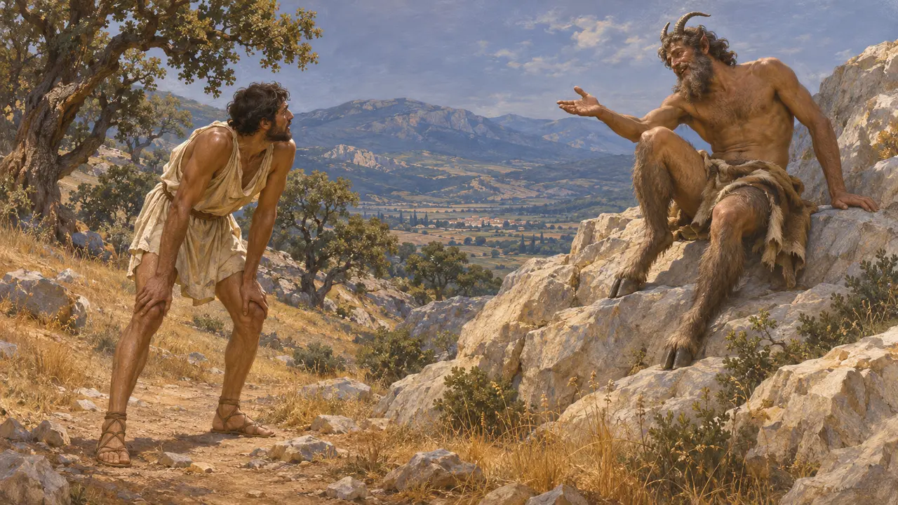
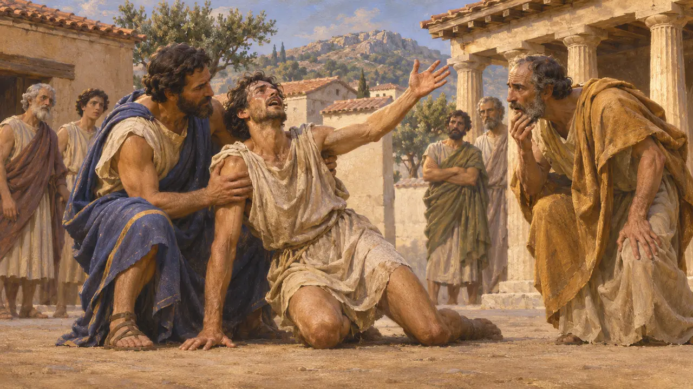

Filípides
Corredor de fondo ateniense enviado a Esparta antes de Maratón, 490 a. e. c.
En el juego: Nivel 8: La bahía de Maratón
Filípides era un corredor entrenado al que los generales atenienses enviaron a Esparta en 490 a. e. c. para pedir ayuda contra la fuerza persa que había desembarcado en Maratón. Heródoto dice que llegó a Esparta al día siguiente de salir de Atenas, una distancia de unos 240 km según los cálculos modernos. Hoy se le recuerda por una carrera que nunca hizo: la de Maratón a Atenas.
En el juego: El juego lo presenta en una nota de la crónica: el corredor enviado a Esparta antes de Maratón, que llegó al día siguiente de salir de Atenas. La nota acierta al distinguirlo de la posterior historia de la carrera de Maratón a Atenas.

El mensaje a Esparta
Relato antiguoHeródoto cuenta que, mientras los generales seguían en la ciudad, enviaron a Esparta a Filípides, un ateniense que era hemeródromo, un corredor de oficio. Llegó a Esparta al día siguiente de salir de Atenas y pidió a los espartanos que no permitieran que una de las ciudades griegas más antiguas cayera en la esclavitud a manos de extranjeros. Señaló que Eretria ya había sido esclavizada.
Herodotus 6.105-106

Por qué esperaron los espartanos
En disputaHeródoto dice que los espartanos deseaban ayudar, pero no se pondrían en marcha antes de la luna llena, por ley religiosa. Llegaron con 2.000 hombres cuando la batalla ya había terminado. Algunos historiadores aceptan el motivo religioso y a menudo lo relacionan con la fiesta de las Carneas. Otros sospechan un pretexto o una verdadera crisis interna, ya que Platón menciona una guerra con los mesenios que retuvo a Esparta en aquel momento.
Herodotus 6.106, 6.120; Plato, Laws 698e

Pan en el monte Partenio
Relato antiguoHeródoto recoge lo que el propio Filípides afirmaba: que en el monte Partenio, por encima de Tegea, el dios Pan lo llamó por su nombre. Pan le preguntó por qué Atenas no le rendía honores, si ya la había ayudado antes y volvería a hacerlo. Heródoto cuenta que, tras la victoria, los atenienses fundaron un santuario de Pan al pie de la Acrópolis, con sacrificios anuales y una carrera de antorchas.
Herodotus 6.105
Su nombre y su hazaña
En disputaLos manuscritos de Heródoto no coinciden en su nombre. Unos dan Fidípides y otros Filípides, y muchos estudiosos prefieren el segundo, la forma que usaron autores posteriores. Algunos dudaron de que alguien pudiera correr tan lejos tan deprisa, pero corredores modernos han demostrado que es posible. El Spartathlon, una carrera de Atenas a Esparta celebrada por primera vez en 1983, nació de una prueba para verificar el tiempo que se le atribuye.
Herodotus 6.105; P. Krentz, The Battle of Marathon, 2010

La carrera que no fue suya
Leyenda posteriorHeródoto no dice nada de un corredor que llevara la noticia de la victoria de Maratón a Atenas, y ese relato aparece mucho más tarde. Plutarco cuenta que Heráclides Póntico llamó Tersipo al mensajero, pero la mayoría de los autores lo llamaron Eucles, que murió tras dar la noticia. Luciano, en el siglo II e. c., atribuyó la hazaña a Filípides. El poema de Robert Browning de 1879 fijó esta versión, y la carrera de maratón de los Juegos Olímpicos de 1896 la tomó como modelo.
Plutarch, On the Glory of the Athenians 347c; Lucian, A Slip of the Tongue in Greeting 3
Fuentes
- Herodotus 6.105-106
- Herodotus 6.120
- Plutarch, On the Glory of the Athenians 347c
- Lucian, A Slip of the Tongue in Greeting 3
- Plato, Laws 698e
- P. Krentz, The Battle of Marathon, 2010